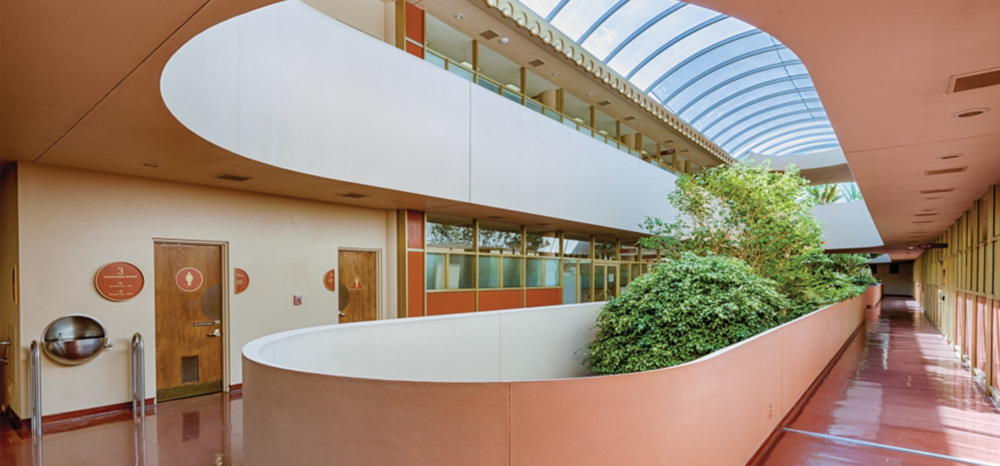

Intended to centralize thirteen dispersed Marin county departments, the Civic Center project encompassed an entire campus of civic structures and incorporated ideas from Wright’s Broadacre City scheme of the 1930s. The three-story 580-foot long Administration Building, and a four story 880-foot long Hall of Justice together spanned the valleys between three adjacent hills. The flattened dome of the circular library and its connected gold tower (built to encase a smokestack and a radio transmitter) form the focal point of the plan. The concrete Civic Center’s pink stucco walls, blue roof and scalloped balconies are distinctive.
The interiors feature glass walls and are arranged around open atriums in order to promote the transparency that Wright felt governments should promote. Though Wright planned the atriums to be open to the sky, practical considerations saw barrel-vaulted skylights put in following Wright’s death. Construction was carried out by William Wesley Peters and Aaron Green. The Hall of Justice was completed in 1969, the Veterans Memorial Auditorium opened in 1971, and the Exhibit Hall opened in 1976. The site also includes a circular post office, Wright’s only commission for a national U.S. government facility.
